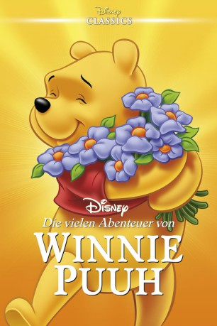

IMDB-Wertung: 7.6 / 10
IMDB-Wertung: 7.6 / 10  Metascore:
Metascore: 
Drei Abenteuer aus dem idyllischen Hundertmorgenwald, wo der freundliche Bär Winnie Puuh und seine Freunde I-Ah, Ferkel, Tigger, Hase und viele mehr ein harmonisches Leben führen...
Alternativ: The Many Adventures of Winnie the Pooh
 IMDB-Wertung: 7.6 / 10 Metascore:
Drei Abenteuer aus dem idyllischen Hundertmorgenwald, wo der freundliche Bär Winnie Puuh und seine Freunde I-Ah, Ferkel, Tigger, Hase und viele mehr ein harmonisches Leben führen...
Jahr: 1977
Dauer: 70 Minuten
FSK: 0
Land: USA Studio: Buena Vista Distribution CompanyTonspuren:
Untertitel:
Auflösung: SD (400x304) Größe: 700 MB
Genre: Komödie, Animation/Trick, Familie, Musical
Regisseur: John Lounsbery, Wolfgang Reitherman
Drehbuch: A.A. Milne
Soundtrack: Buddy Baker
Darsteller:
 Sebastian Cabot als Narrator
Sebastian Cabot als Narrator Howard Morris als Gopher
Howard Morris als Gopher John Fiedler als Piglet
John Fiedler als Piglet Hal Smith als Owl
Hal Smith als Owl Clint Howard als Roo (Honey Tree and Blustery Day)
Clint Howard als Roo (Honey Tree and Blustery Day) Sterling Holloway als Winnie the Pooh
Sterling Holloway als Winnie the Pooh Paul Winchell als Tigger
Paul Winchell als TiggerDatei: X:\Kinder Disney HD\Winnie Puuh\Abenteuer von Winnie Puh, Die (1977, FSK0, 400x304).avi seit 25.03.2018
Festplatte: Kinder-Filme+Trick
 Es gibt insgesamt 8 Filme in der Gruppe 'Kinder Disney HD\Winnie Puuh'
Es gibt insgesamt 8 Filme in der Gruppe 'Kinder Disney HD\Winnie Puuh'